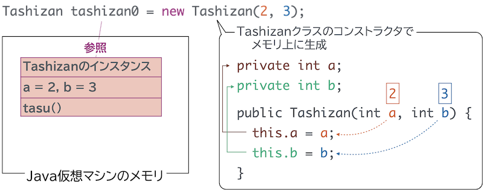
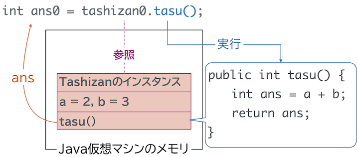
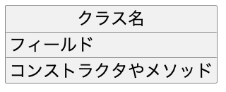
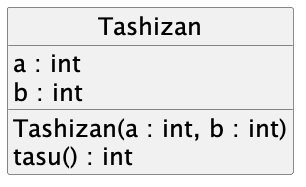
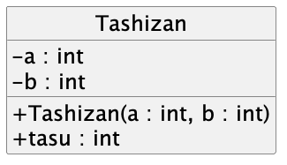
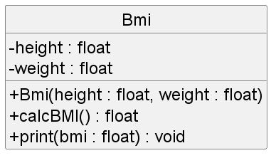
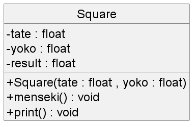

Javaプログラミングでは、クラスの構造を理解した上で、自分でクラスを作れること がとても重要になります。
指示どおりにクラスを作る練習をした上で、実際に自分でクラスを作ることができるか、問いで確認しましょう。
次ページからは、この問題文を解くにあたっての解説です。まずは、問題文と解説を照らし合わせ、どのように記述すれば良いか確認した上で、あなたも同じように書いてみましょう 。
問題文では 足し算を行うクラスを作成しなさい と指示されています。
クラスを作成する ことは、.java ファイルの中に、class というキーワードを使い、ブロック { } を記述することから始まります。
Tashizan.java というファイルを新規作成し、Tashizan クラスを作り始めましょう。
public class Tashizan {
// ここに、クラスの内容を書きます。
}
これにより、足し算を行うための Tashizan クラスの土台ができました。
次に、問題文では 足し算クラスは、2つの32ビット整数をデータとして持つ と指示されています。
クラスにデータを持たせる とは、クラスの内容に フィールド変数 を記述することです。
フィールド変数は、クラスのブロックに直接、変数のように記述します。
Tashizan クラスに、32ビット整数を表す int 型を使ったフィールド変数を まずは1つ、記述しましょう。
public class Tashizan {
private int a;
}
a という int 型のフィールド変数を記述しました。
今回の問題文では、足し算クラスは、2つの32ビット整数をデータとして持つ と指示されているので、もう1つフィールド変数が必要です。記述しましょう。
public class Tashizan {
private int a;
private int b;
}
b という int 型のフィールド変数を記述しました。
a, b という2つの int 型のフィールド変数が記述されることで、 足し算クラスは、2つの32ビット整数をデータとして持つ ことができるようになりました。
次に、問題文では このデータを使って足し算の結果を答える機能を持つ と指示されています。
データとは、前の練習のパートで作成した a, b のフィールド変数のことです。
クラスに機能を持たせる とは、クラスの内容に メソッド を記述することです。
メソッドは、クラスのブロックの中に処理ブロック { } として記述します。
Tashizan クラスに、データを使って足し算をする tasu() メソッドを作成しましょう。
public class Tashizan {
private int a;
private int b;
public void tasu() {
int ans = a + b;
}
}
tasu() というメソッドを作成し、その中で a, b の足し算の結果を ans に格納するメソッドを作成しました。
void とは、戻り値を返さないメソッドであることを表すキーワードです。しかし、問題文では 足し算の結果を答える と指示されています。
結果を答えるためには、メソッドに戻り値の型を指定 した上で、 処理結果を return する ように記述します。
public class Tashizan {
private int a;
private int b;
public int tasu() {
int ans = a + b;
return ans;
}
}
void を戻り値となる計算結果 ans の型である int に変換し、また計算結果自体を return するように記述を書き換えました。
次に、問題文では 足し算クラスのデータは、インスタンス化時に初期化する と指示されています。
足し算クラスのデータとは、フィールド変数のことでしたね。
インスタンス化は、クラスをプログラム上で使える（メモリを確保する） ための処理で、この時にコンストラクタという特別なメソッドを実行できます。
つまり データを、インスタンス化時に初期化する とは、コンストラクタでフィールド変数を設定する ように記述します。
また、コンストラクタは、フィールド変数やメソッドの間に、クラス名と同じ名前 で記述します。
public class Tashizan {
private int a;
private int b;
public Tashizan(int a, int b) {
this.a = a;
this.b = b;
}
public int tasu() {
int ans = a + b;
return ans;
}
}
Tashizan(int a, int b) コンストラクタを作成しました。
このコンストラクタは、引数の a, b の値を使って、Tashizanクラスのフィールド変数 a, b を設定します。
Hosyu0クラスを作成し、プログラムを実行するための main メソッドを用意します。
public class Hosyu {
public static void main(String[] args) {
// 実行するプログラムの内容
}
}
クラスをプログラム上で使うには、クラスを使えるようにメモリを確保する インスタンス化 が必要でした。
インスタンス化のためには、 new キーワードとコンストラクタを使います。
コンストラクタの引数 a を 2, b を 3 として、インスタンス化をしてみます。
public class Hosyu {
public static void main(String[] args) {
Tashizan tashizan0 = new Tashizan(2, 3);
}
}
tashizan0 変数が、インスタンス化した（使えるようにメモリを確保した）あるTashizanクラスのインスタンス を参照できるようになりました。
コンストラクタに a=2, b=3 となるように 引数を渡しているので、コンストラクタの処理が実行されることで Tashizanインスタンスのフィールド変数 a, b もそれぞれ 2 , 3 になっています。

tashizan0 変数から参照された Tashizanインスタンスに、足し算を行わせましょう。
public class Hosyu {
public static void main(String[] args) {
Tashizan tashizan0 = new Tashizan(2, 3);
int ans0 = tashizan0.tasu();
System.out.println(ans0);
}
}
プログラムを実行し、実行した結果が標準出力に表示されることを確認しましょう。
5

ここまでの内容を踏まえて、標準入力（キーボード）から数値を入力し計算できるようにしましょう。
Hosyu0クラスを、下のように書き直して、実行してみてください。
import java.util.Scanner;
public class Hosyu {
public static void main(String[] args) {
Scanner input = new Scanner(System.in);
System.out.println("足し算したい値を入力してください。");
System.out.print("1つ目：");
int a = input.nextInt();
System.out.print("2つ目：");
int b = input.nextInt();
Tashizan tashizan0 = new Tashizan(a,b);
int sum = tashizan0.tasu();
System.out.println("合計は" + sum + "です。");
}
}
足し算したい値を入力してください。
1つ目：8
2つ目：6
合計は14です。
以上で、練習はおしまいです。ここまでのやり方と同じように、問1から問3までクラスを作ってみましょう。
指示通りにプログラムを作成し、下記の実行結果になることを確認しなさい。
掛け算したい値を入力してください。
1つ目：2
2つ目：3
掛け算の結果は6です。
問1の解答です。 自身のプログラムと比較してみてください。
public class Kakezan {
private int a;
private int b;
public Kakezan(int a, int b) {
this.a = a;
this.b = b;
}
public int kakeru() {
int ans = a * b;
return ans;
}
}
import java.util.Scanner;
public class Hosyu {
public static void main(String[] args) {
Scanner input = new Scanner(System.in);
System.out.println("掛け算したい値を入力してください。");
System.out.print("1つ目：");
int a = input.nextInt();
System.out.print("2つ目：");
int b = input.nextInt();
Kakezan kakezan = new Kakezan(a,b);
int sum = kakezan.kakeru();
System.out.println("掛け算の結果は" + sum + "です。");
}
}
クラス図を用いると、プログラムそのものよりも視覚的にわかりやすい形でクラス構造を確認したり、表すことができます。
クラス図は、四角形を用いて、下のように書きます。

例えば、練習で作成した足し算クラスをクラス図で表すと、以下のようになります。
クラス図とプログラムの対応を見比べてみましょう。

public class Tashizan {
private int a;
private int b;
public Tashizan(int a, int b) {
this.a = a;
this.b = b;
}
public int tasu() {
int ans = a + b;
return ans;
}
}
クラス図にはさらに、 public private などの、クラス外部からの利用の可・不可（ カプセル化 ）を行うための修飾子も表すことができます。
主に、 + が public （クラスの外側から利用可）、- が private （クラスの内部からのみアクセス可）を記述します。
これを足し算クラスのクラス図に反映すると、以下のようになります。
クラス図とプログラムの対応を見比べてみましょう。

public class Tashizan {
private int a;
private int b;
public Tashizan(int a, int b) {
this.a = a;
this.b = b;
}
public int tasu() {
int ans = a + b;
return ans;
}
}

実行結果 175cm , 70kgで実行した場合
あなたのBMIは22.857143です。

実行結果 縦の長さが5,横の長さが4の場合
縦：5
横：4
四角形の面積は20.0です。